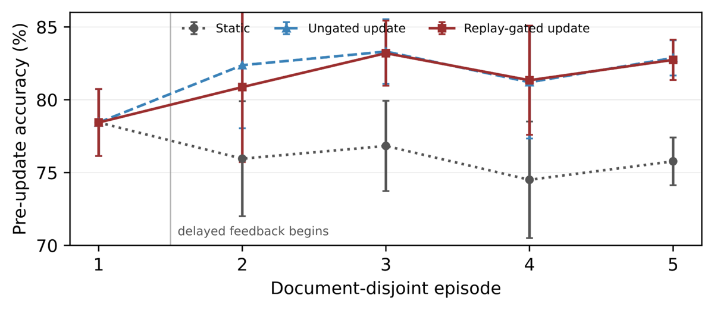

TL;DR — Le learner n'est pas le modèle mais le harness : modèle, prompts, retriever et pool de candidats gelés, seuls un calibrateur de contrat d'answer et un sélecteur de colonne sont mutables ; chaque mise à jour proposée doit passer un gate de rétention sur un buffer de replay document-disjoint, et un jeu de 16 documents / 380 questions jamais lu par la boucle mesure si le gain survit hors du buffer.
Claim principal, formulé précisément — Sur DataBench avec workbook gold ET type d'answer gold fournis, l'adaptation continue (5 épisodes, 10 ordres) fait passer la forward accuracy de 75.8 % (statique) à 82.0 % (dual gate) / 82.4 % (sans gate) [§5.4, Tab. 6] ; sur le split strict jamais lu, le gate accuracy-only fait passer la held-out accuracy moyenne de 80.3 % à 86.7 % [§5.4, Tab. 7]. Claim négatif, et c'est le plus intéressant : 3 des 26 updates approuvées par le gate dégradent la held-out accuracy — la non-régression sur le buffer n'implique pas la non-régression hors buffer [§5.4, §6].
⚠️ Ce n'est pas du RL. Aucun gradient de politique, aucun GRPO/PPO, aucun reward model, aucun poids mis à jour. reward n'apparaît que dans les scores CL-Bench [App. H]. Le papier intéresse ce corpus pour son protocole de mesure du gate, pas pour son optimisation.
96ff0bc) [§4.2].embeddinggemma-300m, top-10, rerank par schema signature (noms de colonnes + valeurs représentatives) [§3.1].État du harness formalisé : H_θ = (R, G, E, C_hard, V_θ, S_θ) — R retrieve/charge, G génère, E exécute, C_hard applique les checks d'admissibilité non appris, V_θ calibre l'acceptation du contrat d'answer, S_θ sélectionne parmi les actions query/colonne acceptées. Seul θ = (V, S) est mutable [§3.2, éq. 1 ; périmètre explicite en Tab. 1].
Table: data (2,668 rows)
Columns:
personName: text, e.g. Elon Musk, Jeff Bezos
finalWorth: numeric, range 1,000 to 219,000
age: numeric, range 19 to 96
selfMade: boolean, e.g. True, False
Sample rows:
Elon Musk | 219000 | 50 | True | M | United States
Des règles de génération couvrent nulls, comparaisons de dates, comparaisons de groupes, seuils de comptage, taux dérivés [App. D].C_hard : une seule instruction commençant par SELECT ou WITH, rejet des points-virgules embarqués et de patterns en denylist, cap de 500 lignes, read-only, pas de mutation [App. E, App. I]. ⚠️ Pas de timeout d'exécution explicite ; la validation SQL n'est pas un parser complet ; l'injection de prompt au niveau cellule n'est pas traitée — les auteurs l'écrivent eux-mêmes [§3.2, App. I].SELECT COUNT(*) FROM data WHERE age < 40 AND age IS NOT NULL; → 87, là où le baseline répond depuis 3 sample rows.C_hard est une clause d'échec non relaxable : parser, binder, exécution, cap 500 lignes, multi-statement, mutation, read-only — le calibrateur ne peut pas les assouplir [App. E]) ; puis ranking par satisfaction du contrat ; pas de somme pondérée.COUNT explicite [App. E]. Les auteurs qualifient la procédure de diagnostique (choisir la colonne qui matche le gold est une opération oracle, l'égalité peut être fortuite) — honnêteté correcte.COUNT 293, erreur parser 236, mismatch de type/forme 193, erreur binder 169, violation read-only/single-query 122.gpt-4o-2024-08-06, température 0, prompt officiel du benchmark, non recopié dans le papier (le papier renvoie au protocole publié). Run de jugement des 641 questions répété 3 fois, moyenne et range rapportés [§4.2]. ⚠️ Les auteurs écrivent que « le jugement GPT-4o n'est pas une adjudication humaine » et qu'« une adjudication humaine est nécessaire avant de traiter le score comme une borne inférieure stricte » [§6, App. I] → accord juge↔humain : non mesuré.g_t = I[ Acc(θ'_t; B_t) > Acc(θ_t; B_t) ∧ SelAcc(θ'_t; B_t) ≥ SelAcc(θ_t; B_t) ]
avec Acc comptant les abstentions comme fausses et SelAcc = accuracy parmi les acceptés. Gate accuracy-only = suppression de la seconde condition [§3.2]. Transition : θ_{t+1} = g_t·θ'_t + (1−g_t)·θ_t — rejet ⇒ l'incumbent est exactement retenu.B_t = 30 % des documents déjà observés, par hash stable, disjoint des 70 % de fitting F_t (F_t ∩ B_t = ∅) [§3.2, App. E]. Il est lu deux fois par décision (incumbent et proposal, sur exactement les mêmes trajectoires), une décision par épisode, soit ~5 décisions par ordre et 50 propositions sur les 10 ordres [Tab. 6, §5.4]. ⚠️ Comme B_t s'accumule avec les documents observés, les mêmes documents sont relus jusqu'à 4–5 fois dans un ordre → exposition de type holdout adaptatif ; les auteurs le reconnaissent et citent Dwork et al. 2015 [§5.4], et écrivent « les traitements déploient des updates différentes et réutilisent le buffer de façon adaptative, donc ce n'est pas une estimation causale de sécurité » [§6].SelAcc ≥ du dual gate est bien une borne basse appliquée dans la boucle, et elle coûte des points : 82.0 vs 82.4 en forward (−0.4) [Tab. 6] et 86.5 vs 86.7 en held-out (−0.2) [Tab. 7]. Le pattern du corpus est reproduit, à faible magnitude.Pas de reward hacking au sens RL — le pool d'actions est gelé, donc aucune politique ne peut dériver vers l'exploitation du vérifieur. C'est crédible par construction, et le papier le dit en substance [§3.2, §6]. En revanche il documente quatre modes d'échec réels :
| # | Comportement | Détection | Correction | Correction évaluée ? |
|---|---|---|---|---|
| 1 | Faux positifs sémantiques : la requête s'exécute, satisfait le contrat, mais utilise le mauvais filtre / agrégat / grouping / colonne → 195 erreurs acceptées sur 1 576 [§5.3] | Égalité déterministe contre le gold après sélection | Non corrigé. Les auteurs listent ce qu'il faudrait : checks structure-aware, nouveaux prompts de repair, candidats régénérés, vérifieurs représentant scope de prédicat, clés de grouping, cardinalité, intent d'agrégation [§6] | ❌ non, c'est du future work |
| 2 | Sur-rejet (faux négatifs) : 121 des 234 abstentions contenaient la réponse dans la dénotation ; 69 dues à la règle « COUNT explicite », 38 à la compatibilité category/list [App. E] | Audit post-hoc oracle sur les abstentions | C'est précisément ce que le calibrateur apprend : coverage 90.5 % → 96.7 % sur le held-out, selective accuracy stable 88.7 % → 89.1/89.6 % [Tab. 7] | ✅ oui, c'est l'essentiel du gain mesuré |
| 3 | Updates nuisibles promues : 3 des 26 updates approuvées par le gate dégradent la held-out accuracy ; et 6 des 24 rejetées étaient nuisibles [§5.4] | Jeu held-out jamais lu, scoré après figeage | Aucune correction ; recommandation de reporting (approuvés et rejetés, taux de déploiement, pertes par sous-groupe, perf du harness final) [§6] | ❌ non évaluée |
| 4 | Fallback de retrieval qui dévie vers la mauvaise source : se déclenche 14 fois (0.8 %), répare 1 réponse, en casse 1, 12 inchangées [§3.1, App. E] | Ablation appariée | Ablation = 0.0 pt de delta final [App. F, Tab. 13] → composant sans valeur nette | ✅ oui, mesurée et nulle |
Lecture du gate comme filtre (calcul direct sur §5.4, non fait par les auteurs) : taux de base de propositions nuisibles = 9/50 = 18 % ; parmi les approuvées 3/26 = 11.5 % ; parmi les rejetées 6/24 = 25 %. Le gate divise par ~1.6 le taux de nuisibles déployées mais rejette 18 propositions inoffensives. ⚠️ C'est un filtre faible dans les deux sens, et l'abstract ne mentionne que la moitié approuvée (3/26), jamais les 6/24 rejetées — l'omission flatte le gate.
Comportement émergent inattendu, positif : la quasi-totalité du gain held-out vient du calibrateur (+5.9 des +6.4), le sélecteur n'apporte que +0.2 [Tab. 7]. Autrement dit, ce que la boucle apprend réellement, c'est quand accepter, pas quoi choisir.
error et issues séparés [App. E]. Un échec silencieux serait visible.| Chiffre annoncé | Où il est annoncé | Source dans le papier | Verdict |
|---|---|---|---|
| Ungated 82.4 % et dual-gated 82.0 % de forward accuracy sur 79 documents | Abstract | §5.4, Tab. 6 | confirmé |
| Baseline statique 75.8 % | Abstract, Conclusion | §5.4, Tab. 6 | confirmé |
| Le dual gate a le plus grand retrospective gain, 2.7 vs 2.3 | Abstract, §6 | §5.4, Tab. 6 | confirmé — mais la métrique est maison : « retrospective gain » compare le harness final à la performance pré-exposition sur les épisodes antérieurs, et les auteurs écrivent « ce n'est pas du backward transfer standard » [§4.2] |
| Gain forward de 6.3 pts, IC t 95 % de 5.6–6.9 | Abstract | §5.4 | confirmé ; 82.0 − 75.8 = 6.2 en arrondi, l'écart vient de l'usage de valeurs non arrondies, documenté dans la légende de Tab. 6 |
| Split strict excluant 16 documents et 380 questions du fitting et de la promotion online | Abstract | §4.2, App. E | confirmé, et plus fort que l'annonce : exclus aussi de la sélection de seuil et du gating, et fixés par un sel séparé avant toute génération d'ordre |
| Gate accuracy-only : held-out 80.3 % → 86.7 % sur 10 harnesses finaux | Abstract, Conclusion | §5.4, Tab. 7 | confirmé |
| Calibrator-only gagne 5.9 pts, « proche du gain combiné de 6.4 » | Abstract | §5.4, Tab. 7 | confirmé mais ambigu : +5.9 est exact (80.3 → 86.2) ; le « 6.4 » est celui du gate accuracy-only, alors que la ligne littéralement nommée « Combined, ungated » vaut +6.3. Deux lignes différentes derrière le mot « combined » |
| 3 des 26 updates approuvées réduisent la held-out accuracy | Abstract, §5.4, §6, Conclusion | §5.4 | confirmé — et l'abstract omet les 6 des 24 rejetées également nuisibles, pourtant dans le même paragraphe |
| « MiMoTable et les études de cas externes testent la vérification intra-tâche et réutilisent la même discipline promote-or-retain » | Abstract | §5.3, Tab. 5 ; App. H | sur-généralisé. MiMoTable : la différence est de +0.05 pt, « descriptive et non résolue statistiquement », variante choisie après un sweep sur le set released (test-adaptive) [§5.3, App. G]. CL-Bench : les adaptateurs sont spécifiques à chaque tâche, « plutôt qu'un état appris partagé », et ne font aucun appel modèle [App. H] — ce n'est pas VIGIL, c'est l'idée de gate réimplémentée à la main trois fois |
| FiCo bat Prefix-RAG de 63.4 pts (DataBench) et 57.5 pts (MiMoTable) | §5.1 | §5.1, Tab. 3 | confirmé ; McNemar corrigé, χ² = 1100.0, p < 10⁻⁶ sur 1 196 paires discordantes. ⚠️ Baseline volontairement faible, les auteurs la qualifient de « reproduction d'ingénierie d'une configuration déployée, pas un oracle gold-table compétitif » [§1] |
Verdict 7.0 : cohérent. Tous les chiffres de l'abstract se retrouvent, les deltas non arrondis sont documentés, les limites sont écrites par les auteurs eux-mêmes. Deux réserves : l'ambiguïté « combined 6.4 » et l'omission des 6/24 rejetées nuisibles.
| Piste | Traitement | Accuracy | Coverage | Sel. acc. | Source |
|---|---|---|---|---|---|
| Full replay (79 doc., 10 ordres) | Statique | 75.8 % | 87.1 % | 87.0 % | Tab. 6 |
| Ungated | 82.4 % | 94.2 % | 87.5 % | Tab. 6 | |
| Dual gate | 82.0 % | 93.8 % | 87.5 % | Tab. 6 | |
| Oracle sur pool gelé | 84.4 % | — | — | §5.4 | |
| Held-out jamais lu (16 doc. / 380 q.) | Statique | 80.3 % | 90.5 % | 88.7 % | Tab. 7 |
| Calibrateur seul | 86.2 % (+5.9) | 96.7 % | 89.1 % | Tab. 7 | |
| Sélecteur seul | 80.5 % (+0.2) | 90.5 % | 88.9 % | Tab. 7 | |
| Combiné, sans gate | 86.6 % (+6.3) | 96.7 % | 89.5 % | Tab. 7 | |
| Combiné, gate accuracy-only | 86.7 % (+6.4) | 96.8 % | 89.6 % | Tab. 7 | |
| Combiné, dual gate | 86.5 % (+6.3) | 96.6 % | 89.6 % | Tab. 7 |
Trois lectures que les auteurs ne mettent pas en avant : 1. Le gate n'achète pas d'accuracy : sans gate 86.6 %, avec gate 86.7 %. Son apport est de déployer 16 updates au lieu de 40 [Tab. 6] — un budget de risque, pas un gain. Les auteurs l'écrivent d'ailleurs : « promotion agit comme un choix de budget de risque qui échange de la plasticité court-terme contre moins de changements d'état » [§6]. 2. Le plafond du pool gelé est à 84.4 % (oracle qui choisit toujours la meilleure réponse déjà présente) pour 82.0 % atteints → la boucle consomme ~73 % du gain accessible sans régénérer de candidats. Elle converge donc vers un plafond bas, fixé par la génération, pas par l'apprentissage. 3. Tout repose sur deux oracles. Avec workbook gold + type gold : 76.3 %. Type prédit (classifieur TF-IDF out-of-fold, 89.9 % d'accuracy de type) : 70.1 %, soit −6.2 pts (IC bootstrap par cluster de documents 4.6–7.9). Workbook sélectionné + type prédit : 60.8 %, soit −15.5 pts sous l'arm pleinement contrôlé (IC 12.7–18.5) [§5.3, App. E.1, Tab. 10]. Les 82 % de la piste continue sont donc une mesure de laboratoire.
Aucun scaling de taille de modèle, de nombre de tâches ni de compute. 5 épisodes, un seul modèle par piste. Non précisé.
evidence = 4/6, manquant [eval, repro].
Solide sur ce qu'il mesure, étroit sur ce qu'il couvre. Le protocole de mesure du gate est le meilleur que j'aie vu formulé explicitement : fitting et gate disjoints par hash, seuil choisi sur le fitting seulement, audit fixé avant toute génération d'ordre et lu une seule fois après figeage, et reporting des contrefactuels approuvés ET rejetés. Le résultat négatif (3/26 approuvées nuisibles sur le held-out) est crédible précisément parce que le held-out n'a jamais été lu par la boucle. Mais : le gain brut (+6.4) est porté à 92 % par le calibrateur et non par le gate ; le plafond du pool gelé est à 84.4 % ; tout repose sur un vérifieur exact et deux oracles dont le retrait coûte 15.5 points ; et le transfert hors SQL n'est pas établi. À reprendre pour le protocole, pas pour la méthode.

Ce qu'il faut voir : accuracy pré-update par épisode (le harness est évalué sur l'épisode avant que ses labels soient exposés), moyennée sur 10 ordres de documents, barres = IC t 95 %. La ligne verticale marque le moment où le feedback de l'épisode 1 devient disponible. ⚠️ Piège de lecture signalé par les auteurs dans la légende : chaque épisode contient un ensemble de documents différent, donc la variation de la ligne statique reflète la difficulté de l'épisode, pas un changement de modèle — seul l'écart vertical entre statique et adaptatif, à épisode fixé, est interprétable. C'est aussi la seule vue de la dynamique temporelle : avec 5 épisodes et aucun test de saturation, la question de la convergence reste ouverte.
| Ingrédient | Choix du papier | Équivalent juridique | Transfert | Ce qui manque |
|---|---|---|---|---|
| Source des tâches | Benchmarks publics repris tels quels ; labels gold utilisés comme proxy de feedback retardé [§6] | Corrections d'avocats sur des livrables déjà rendus (reviews de memos, annotations de recherche), arrivant avec des semaines de retard | direct — le cadre « delayed label sur une trajectoire immuable » est exactement la forme du feedback juridique réel | Aucun chiffre sur un vrai feedback retardé : les labels sont instantanés et parfaits ici |
| Vérifieur | Exécution SQL + égalité déterministe, contrat de type/cardinalité, FP et FN mesurés séparément (195 FP / 121 FN sur 234 abstentions) [§5.3, App. E] | Pas d'équivalent exact. Partiels : citation existe / est bonne juridiction / n'est pas overruled ; chiffres et dates vérifiables ; conformité de structure au livrable attendu | non pour le vérifieur lui-même ; adaptable pour le contrat d'answer (type + cardinalité attendus, une seule réponse compatible, abstention si non satisfait) | Le papier ne teste jamais la boucle avec un vérifieur inexact : la seule tentative (MiMoTable, juge LLM) donne +0.05 pt non résolu [§5.3] |
| Harness / outils | Une action = un SQL read-only, cap 500 lignes, C_hard non relaxable hors de θ [§3.2, App. E] |
Recherche dans une base jurisprudentielle, extraction de passages, vérification de citation, rédaction — avec des invariants non négociables (jamais citer une décision non vérifiée, jamais omettre une juridiction demandée) | direct pour le principe : mettre les invariants hors du périmètre apprenable, de sorte qu'aucune promotion ne puisse les relâcher | Dans le droit, l'invariant « citation vérifiée » demande une base à jour : la frontière C_hard bouge dans le temps, ce que le papier ne traite pas |
| Algo | Régression logistique sur features manuelles, modèle gelé, pool d'actions gelé [§3.2] | Gating d'un changement de prompt, de rubrique de juge, de politique d'abstention, d'un outil de retrieval | adaptable, mais à transposer au niveau du harness, pas du modèle : pour du RLVR sur poids, le pool gelé disparaît et la garantie d'attribution appariée avec lui | Dès que le générateur apprend, la distribution de propositions change et le papier dit qu'il faut un nouveau cycle de promotion et d'audit [§6] — il ne dit pas comment |
| Curriculum | Aucun ; 5 épisodes équilibrés en nombre de questions, ordre varié par seed [App. E] | Ordre d'arrivée des matières (contrats, contentieux, fiscal), ou des juridictions | non — rien de testé ; les ordres varient la séquence, pas l'appartenance [§6] | Un curriculum par domaine juridique changerait l'appartenance, pas seulement l'ordre |
| Anti-hacking | Structurel : pool d'actions gelé ⇒ aucune politique ne peut dériver ; C_hard hors de θ ; rollback atomique [§3.2] |
Geler le pool de livrables candidats pour la phase d'évaluation d'une modification de harness ; garder les règles déontologiques hors du périmètre apprenable | direct comme discipline d'évaluation, non comme défense en RL en ligne | Aucun test contre un vérifieur attaqué ; la question est rendue sans objet par le design, pas résolue |
| Mesure du gate ⭐ | Fit/gate disjoints par hash ; seuil choisi sur le fitting seulement ; audit de 16 doc. / 380 q. fixé avant tout ordre, jamais lu par la boucle, scoré après figeage ; contrefactuels approuvés et rejetés rapportés [§4.2, App. E, §6] | Identique, sur un jeu de dossiers juridiques réservé | direct, tel quel | Un seul split déterministe, aucun IC sur la table held-out [Tab. 7] |
Le protocole de mesure, pas la méthode. Précisément : (1) un jeu d'évaluation fixé par un sel séparé avant toute génération d'ordre, exclu du fitting, de la sélection de seuil, du gating et de la promotion, lu une seule fois après figeage du harness ; (2) le reporting conjoint des approuvés et des rejetés avec leur contrefactuel. C'est ce couple qui produit l'unique résultat non trivial du papier — 3/26 approuvées nuisibles, 6/24 rejetées nuisibles — et c'est exactement ce que la plupart des boucles d'amélioration de harness ne mesurent pas. Transposé : tant qu'on n'a pas un jeu de dossiers que la boucle d'itération n'a jamais lu, tout gain annoncé sur Harvey LAB ou Vals en itérant le harness est tautologique.
Second ingrédient, plus spécifique : le calibrateur d'acceptation. C'est lui qui porte 92 % du gain (+5.9 sur +6.4), en faisant passer la coverage de 90.5 % à 96.7 % à selective accuracy constante ou en hausse (88.7 % → 89.1 %) [Tab. 7]. Transposé au droit : apprendre quand répondre plutôt que quoi répondre. Et attention au sens — ici le calibrateur réduit le sur-rejet. Dans le droit, où l'omission coûte plus cher que l'erreur, c'est la direction utile, mais il faudra la ventilation par sous-population à enjeu, que le papier ne fait pas (seule ventilation : par type d'answer, Tab. 14).
Monter la boucle VIGIL sur une tâche juridique à vérifieur partiellement exact — la vérification de citations. Tâche : étant donné un memo généré, décider pour chaque citation si elle est acceptée ou signalée. Vérifieur exact disponible : la citation existe-t-elle, pointe-t-elle vers la bonne juridiction, est-elle encore valide — c'est binaire et automatisable. Partie inexacte : la citation soutient-elle la proposition qu'elle appuie — juge LLM + rubrique. Harness mutable : uniquement le calibrateur d'acceptation de citation. Gelés : modèle, prompts, retrieval, pool de citations candidates. Protocole : N dossiers découpés en 5 épisodes, 70/30 fit/gate par hash, plus un jeu de dossiers fixé par un sel séparé avant tout ordre, jamais lu, scoré uniquement en entrée et en sortie.
Deux, liées :
1. Existe-t-il, pour Harvey LAB et Vals, un sous-ensemble de dossiers que l'équipe de post-training n'a jamais lu — ni pour choisir un seuil, ni pour sélectionner un checkpoint, ni pour décider d'un changement de harness — et combien de fois le reste a-t-il été lu ? Sans cette comptabilité, le résultat de ce papier dit que nos gains d'itération de harness sont inestimables au sens strict.
2. Quelle est la frontière C_hard de Gemini Law — la liste des invariants qu'aucune amélioration apprise ne peut relâcher (citation vérifiée, juridiction respectée, abstention obligatoire sur certaines catégories) — et est-elle implémentée hors du périmètre apprenable, ou seulement dans un prompt ? Le papier montre que mettre cette frontière hors de θ est une propriété déterministe de la machine à états, pas une promesse du modèle.